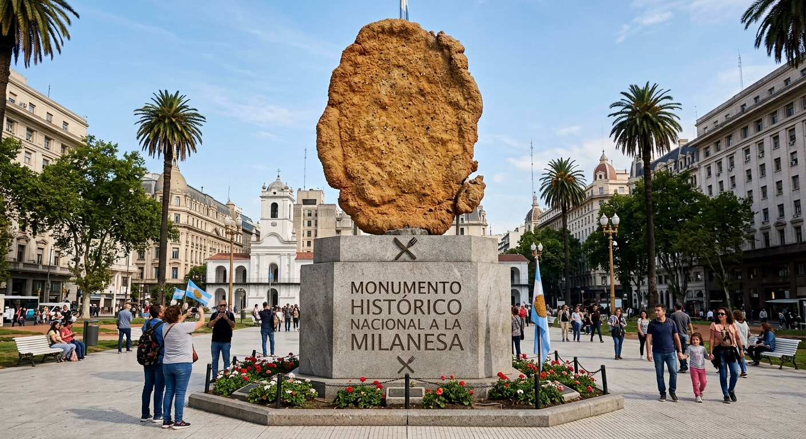

Milan-ga: El paraíso gastronómico del sur
Fundada en 1789 tras independizarse de Argentina, esta fría ciudad de 2000 habitantes es un polo turístico famoso por sus barrios con nombres temáticos como Villa la Milangostura, Larre-bozada y Polo Milanesero. Sus ciudadanos, los milanguesianos, consumen milanesas diariamente en exóticas variantes y combaten el clima con una infusión única en el mundo: café con sabor a milanesa.
El origen de la Isla de Milan-ga
Descubierta por Argentina en el sur y manteniendose como colonia, traería nuevos pobladores argentinos. la isla adoptó costumbres tipicas de argentina como el mate, el asado y el fútbol. Su profunda devoción por la milanesa transformaría su historia para siempre.
La revolución e independencia de Milan-ga
En 1789, un impuesto sobre la producción de milanesas desató la rebelión de los isleños bajo una bandera celeste, blanca y dorada. Esta revuelta, conocida como "La Guerra de la Milan-ga", culminó con el reconocimiento de su independencia como una nación soberana que mantiene orgullosamente sus raíces argentinas.
